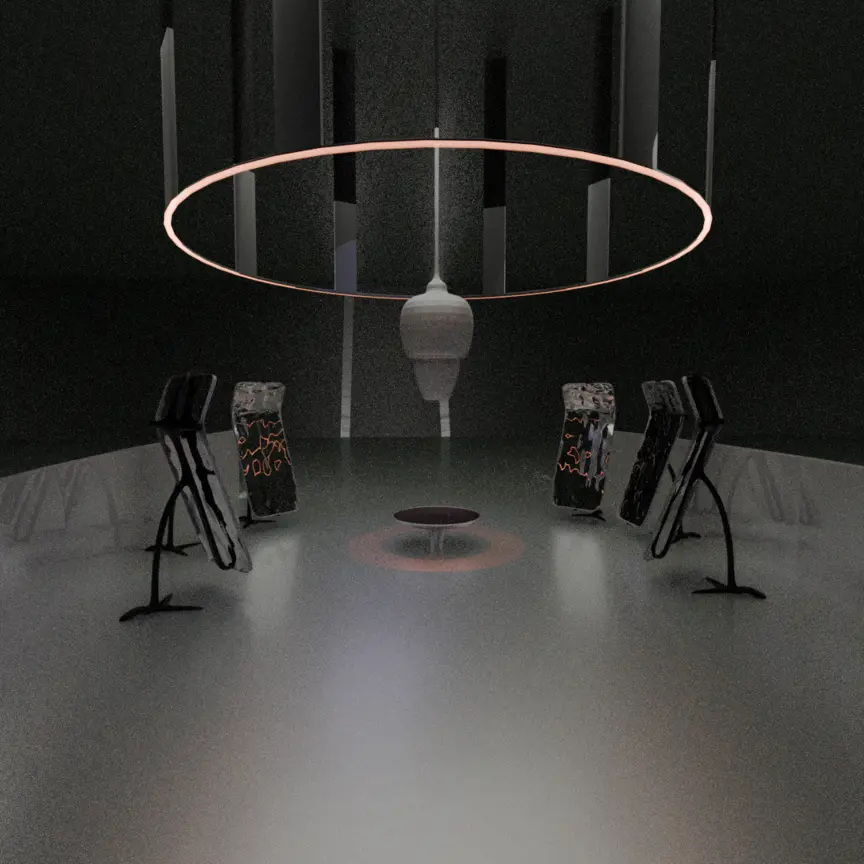

outils:
processing | blender
arduino |
definition:
Inter-Proxemy
FR:
Inter-Proxemy est une installation
qui propose des modifications
de la perception visuelle et sonore
de l’espace en fonction des changements des positions des participants.
À partir de vibrations sonores
des surfaces réfléchissantes ondulent
et distordent l’environnement en fonction de la distance
entre l'utilisateurs
et le point centrale du lieu.
ENG:
nter-Proxemy is an installation
that modifies the visual and aural perception of space
according to the changing positions of the participants.
Using sound vibrations, reflective surfaces undulate
and distort the environment according to the users' distance
from the centre of the space.
